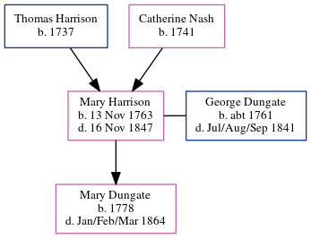

Mary Dungate (née Harrison) 1763 - 1847
[ Home ] | [ Calendar ] | [ Surnames Index ] | [ Errors ] | [ Family History ]The child of Thomas Harrison and Catherine Nash, Mary Harrison, the 5 times great-grandmother of Nigel Horne, was born in Littlebourne, Kent, England on 13 Nov 17631,2,3, was baptised in Bekesbourne, Kent, England on 13 Jan 1765 and married George Dungate (with whom she had 1 child, Mary) in Adisham, Kent, England on 2 Sept 17815. In 1841, she was living in Adisham1.
She died on 16 Nov 1847 in Littlebourne4 and was buried at Holy Innocents' Church, The Street in Adisham on 21 Nov 18476.
Parents
- Thomas was born in 1737
- Catherine was born in 1741
Children
- Mary was born in 1778
Citations
- 1841 England Census Online publication - Provo, UT, USA: The Generations Network, Inc., 2006.Original data - Census Returns of England and Wales, 1841. Kew, Surrey, England: The National Archives of the UK (TNA): Public Record Office (PRO), 1841. Data imaged from the National
- Kent Burials - Findmypast
- Kent, England, Tyler Index to Parish Registers, 1538-1874 Online publication - Provo, UT, USA: Ancestry.com Operations, Inc., 2010. This collection was indexed by Ancestry World Archives Project contributors.Original data - Frank Watt Tyler. The Tyler Collection. Canterbury, Kent, England: The Institute of Herald
- England & Wales, FreeBMD Death Index: 1837-1915 Online publication - Provo, UT, USA: The Generations Network, Inc., 2006.Original data - General Register Office. England and Wales Civil Registration Indexes. London, England: General Register Office. © Crown copyright. Published by permission of the Cont
- England, Select Marriages, 1538–1973 Ancestry.com Operations, Inc.
- Kent Burials - Findmypast
Media
1841 UK Census

Kent Burials - GBPRS/CANT/D/95219068
Family Tree
Map
Generated by ged2site. Last updated on Jul 3, 2024